Upon joining Ford in 2021, my first task was to redesign the existing PACE application for automobile engineers at Ford which was initially built by programmers without any design thinking involved. My responsibility was to improve the application's readability, navigability, and accessibility by considering the constraints of Qlikview.
'Performance Analytics for Connected Engineering' is an analytics app that monitors the performance across the Ford connected vehicle ecosystem. It reports connectivity issues when a command is requested by the customer from the mobile app to the vehicle. To proceed further, I had to understand the goals and challenges of the project and put pen to paper.
Challenges and Goals
- Finding the most vital usability problems and fixing them
- QlikView (an analytics tool) dev constraints
- Implementing the Ford Design System to the existing dashboard
- Measure outcome
Research
To understand the behavioral patterns and identify the pain points of the users, I conducted a 10-question survey with 51 participant users.
One surprising takeaway was their response to 'How far back do you review data?' Almost 97% of the users were only interested in viewing the data within recent 6 months. The application was earlier storing the past 4 years of the data which was in turn affecting the speed and performance of the dashboard.
In addition to this, the participants were asked to list out the areas of improvement. Below are the 4 most common points mentioned by the participants.
- Visual noise, crowded data, no consistency, difficult to find information
- Technical terms were difficult to understand for business stakeholders. Engineers were familiar with these terms.
- It's challenging to find hidden filters
- The charts take forever to load, too slow when the filters are selected
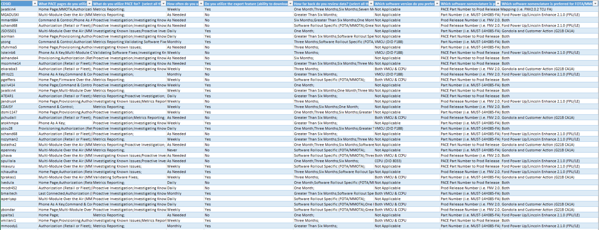
User Personas
After research and testing, I compiled all data into a user persona to give any potential stakeholders or coworkers a simple picture of what typical users look like.
The vital takeaways are that there are two types of users - field workers (engineers, quality control), and decision-makers (business managers and product managers). Each has its respective responsibilities and pain points.
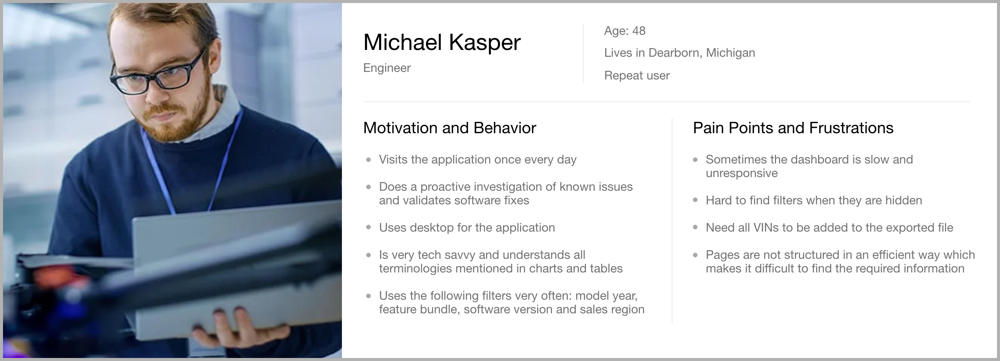
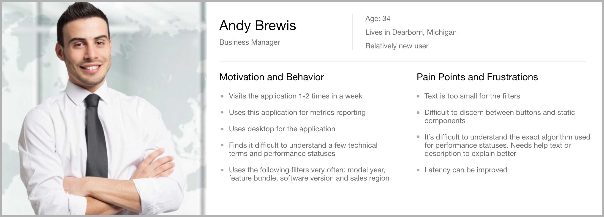
Identifying Pain Points
Problem 1 : Inconsistent UI
The elements on the dashboard pages are not uniform. Components such as links, buttons, icons, header, and theme colors are inconsistently used across the application. Titles and body copy have inconsistent font styles and font sizes which stops the users from establishing a pattern in their minds and completing the task efficiently.
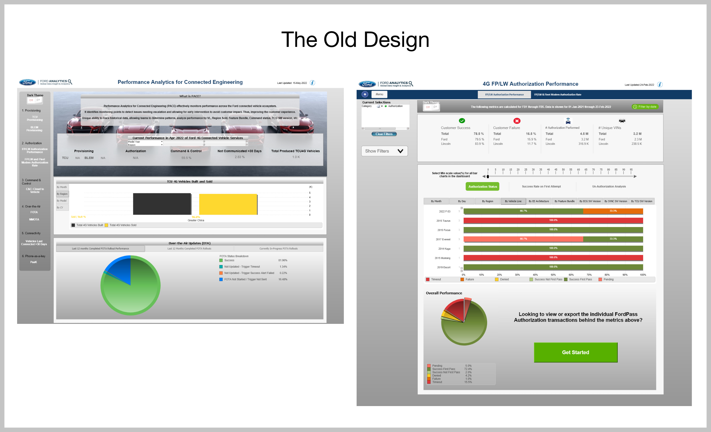
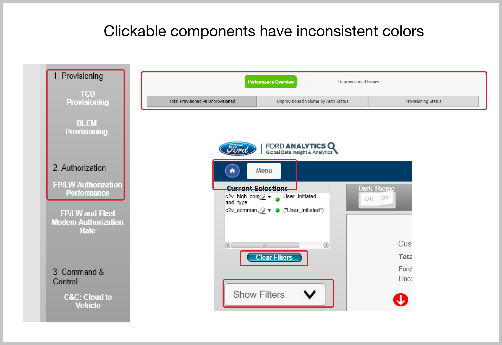
Problem 2 : Charts and technical terms have no help text to provide context
Some users found it difficult to understand the technical terms used in the dashboards. Knowledge base search-ability is a massive hurdle, and users would rather fire off a support ticket than search for the information they need.
Problem 3 : Hidden filters
A lot of engineers and product owners complained about filters not being very obvious to find due to the expand-collapse component. Even if the users found the filters, it was always an additional step to expand the filters and then select the required filter option.
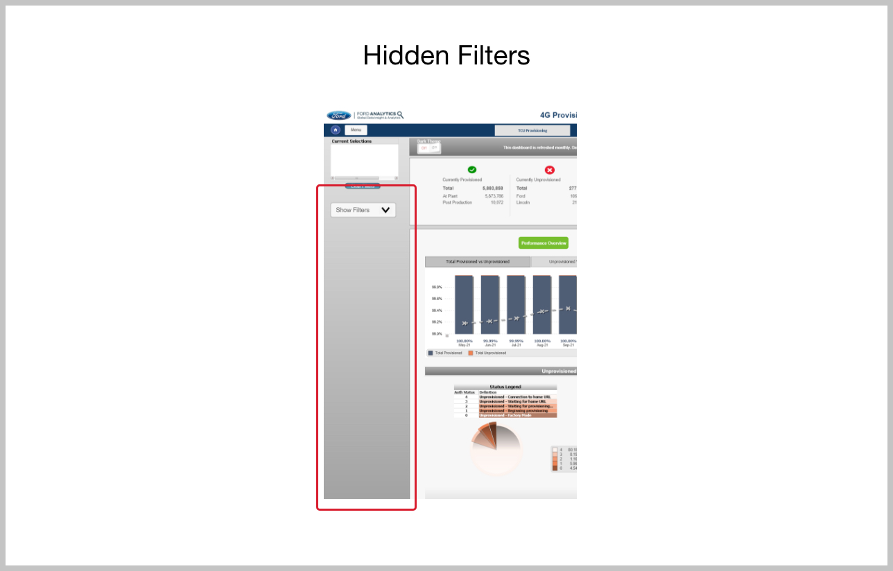
Problem 4 : App speed and performance
User research helped us find out that loading charts and filters were taking more time than expected due to the data overload in the QlikView hence affecting the speed and performance of the app.
Designing Solutions
I started my design process with low-fidelity wireframes. I began my process in isolation to gather all my thoughts followed by having several working sessions with the team members (product owner, data scientists, UX writer, and developers). Once we were all aligned with the proposed solutions, we tested them with our customers and received a positive response to moving forward with the next steps of prototyping.
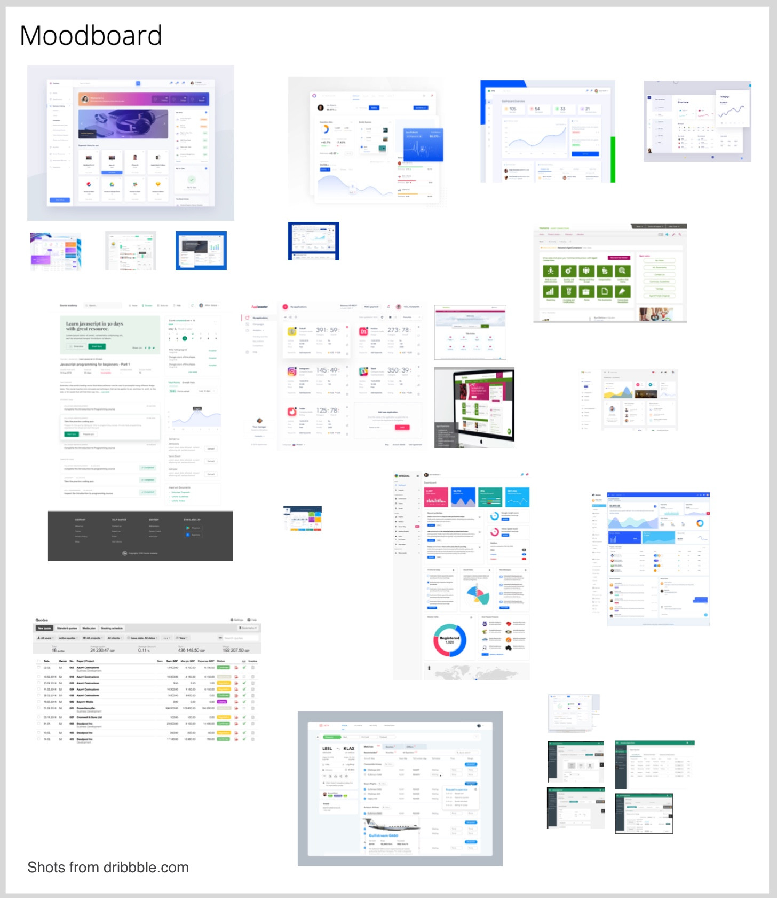

Solution 1 : Intuitive and consistent UI design language
As you can see, the inconsistent UI was one of the biggest problems for the users. The data wasn't displayed in a hierarchical manner which resulted in visual noise and crowded data making it difficult for the user to comprehend and analyze the results.
As a solution, I decided to implement the components from the Global Ford Design System which helped in achieving a pattern and consistency in the user interface. It would help users to reduce the learning time for a product since user gets familiar with the given experience. This way they can focus on executing the task and not learning how the product UI works every time they switch the context.
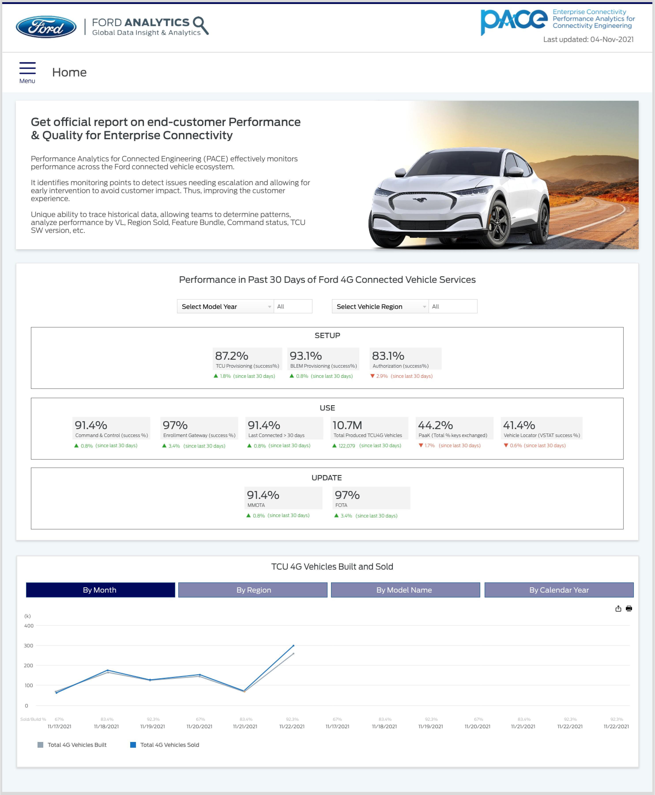
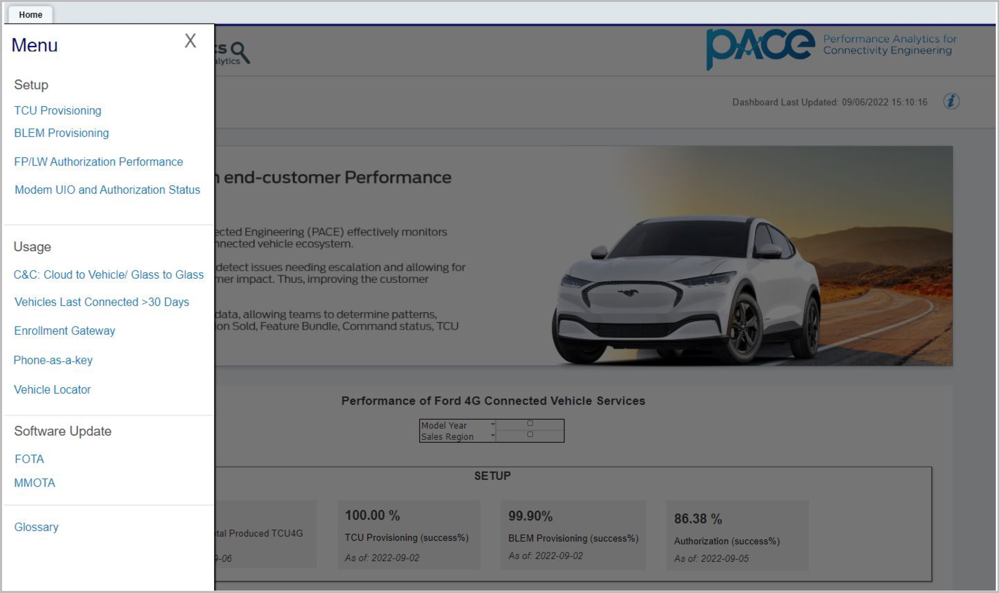
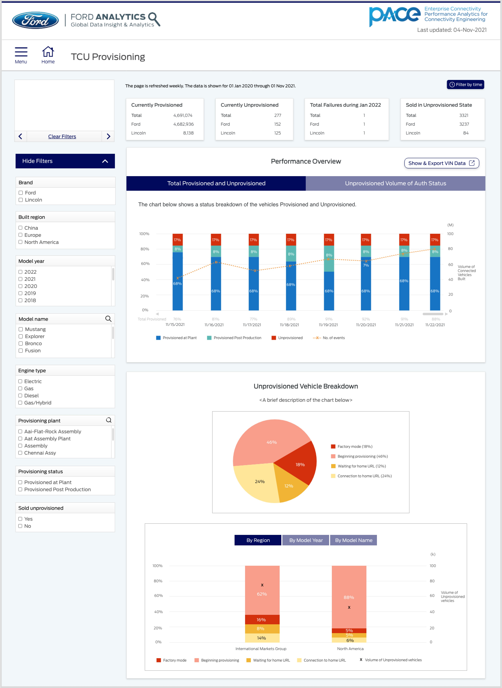
Solution 2 : Adding help text and glossary page for technical terms
Understanding technical terms in the connected vehicle ecosystem was a challenge, especially for the business owners and the management.
As a solution, I decided to include help text on hover for all performance statuses which provides context that some of the terms themselves may not provide.
One way to reduce the time and effort for the users was to show all the filters by default instead of collapsing them within an accordion component. I didn't want to change the position of the filters because the patterns we see on our favorite sites shape what we expect to encounter on other websites or applications. Filtering for products on Amazon, and filtering for flights on Kayak, Facebook, Google, Twitter, and eBay all use left-side navigation and/ or filters. There are different reasons for this but the simple explanation is that most of us read left to right and so the left side of the screen is where we look most frequently.
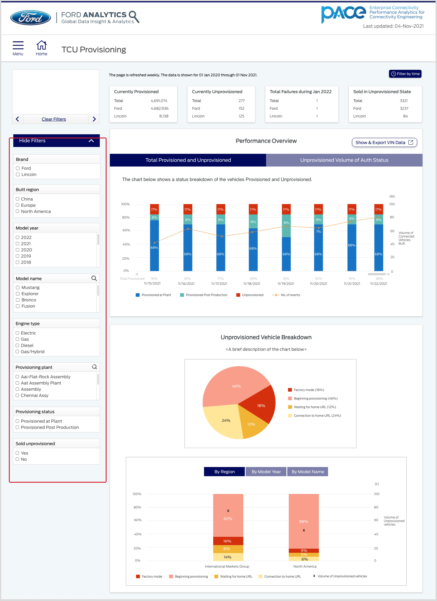
Solution 4 : App speed and performance
As found in user research, loading charts and filters took a lot of time and hence reduced the efficiency of the app. And since I knew that user's didn't care about the data older than 1 year, I decided to remove all that data from the backend which resulted in faster load speed and performance of the application.
Summary
Through research and testing, I found that the PACE's (Performance Analytics for Connected Engineering) four biggest problems were poor UI, data load speed, technical jargon, and hidden filters. I minimized the causes of problems by continuous testing and iterations on the design solutions leading to the following outcomes:
1. Reduced the load time of all data visualizations by 3 seconds
2. Increased the number of internal engineering and management users from 257 to ~1500 within 4 months of product release
3. Reduced the user time for completion of major tasks in the app by an average of 12 seconds (32%)